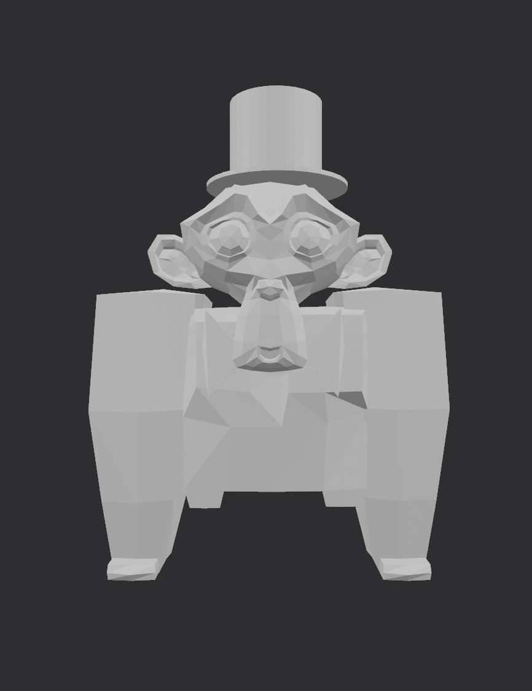
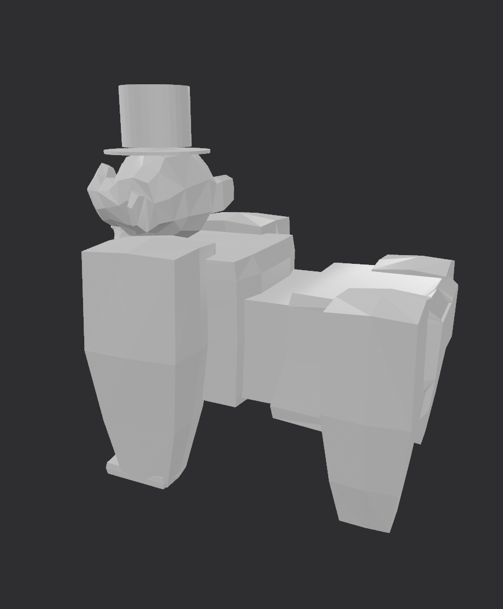

G O R I L L A
This is a project I created in Western Springs Highschool Y11. The goal was to designs a figurine to learn and understand how to use Blender. I focused on using strong and easy shapes. The model was created using a basic shapes and refined to develop the head, body, and facial features. Throughout the process I focused on maintaining clean geometry. This project helped me improve my understanding of character modeling.


Software: Blender
Year: 2025
Focus: Character Modelling